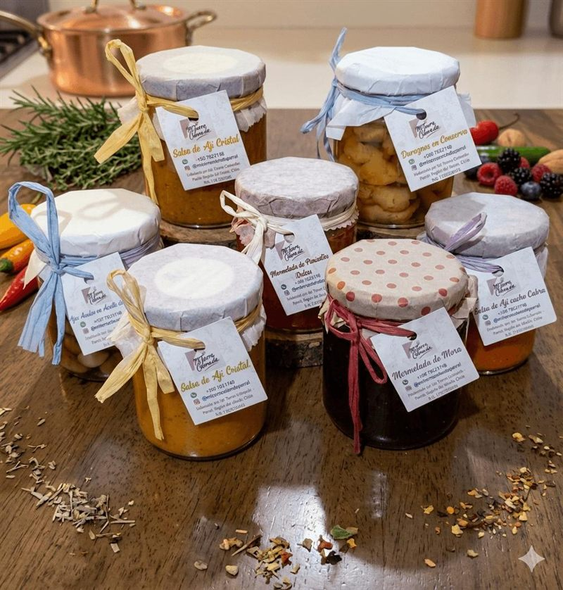
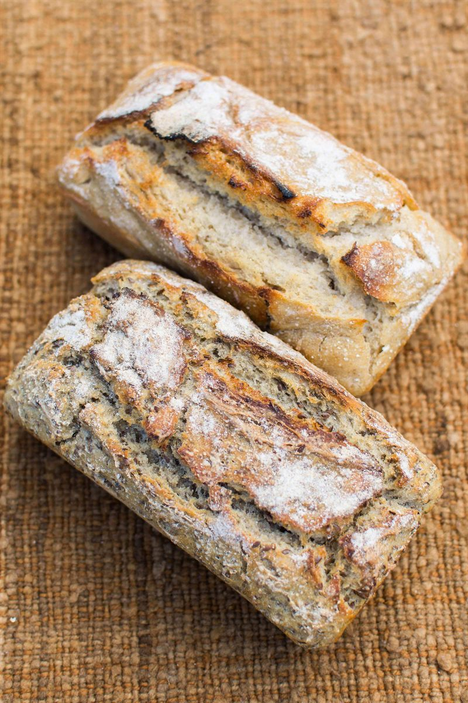

El valor de la lentitud y la memoria de la tierra
«No aceleramos ningún proceso: el pan se fermenta al compás del clima y las frutas se cocinan cuando el campo nos las regala.»
Ubicados en los faldeos precordilleranos de Parral, en la Región del Maule, rescatamos el patrimonio gastronómico local a través de procesos 100% artesanales y libres de preservantes industriales. Creemos en la soberanía alimentaria y en llevar a tu hogar alimentos reales que nutren cuerpo y alma.
Nuestras Preparaciones
El secreto detrás de cada sabor: tiempo, paciencia y los mejores ingredientes naturales.
Masa Madre Real
Elaborado exclusivamente con harina seleccionada, agua, sal de mar y cultivo vivo de masa madre. Sin levaduras químicas ni aditivos.
- Fermentación lenta de 12 a 15 horas
- Fácil digestión y bajo índice glicémico
- Corteza crocante y miga aireada
 🍓 100% Fruta Precordillerana
🍓 100% Fruta Precordillerana
Mermeladas Gourmet
Frutas recolectadas en su punto óptimo de madurez en la precordillera de Parral, cocinadas lentamente en ollas tradicionales.
- Alto porcentaje de fruta natural
- Bajo aporte de azúcar añadido
- Perfectas para maridar quesos y carnes
 🫒 Aceite de Oliva Extra Virgen
🫒 Aceite de Oliva Extra Virgen
Salsas y Conservas
Asamos hortalizas como berenjenas y ajos chilenos, y cocinamos a fuego lento nuestras salsas de ají combinadas con aceite de oliva extra virgen y especias.
- Berenjenas y ajos asados artesanalmente
- Salsas de ají cocinadas a fuego lento
- Sellado al vacío natural, sin aditivos ni preservantes
Nuestros Sabores Reales
Elige tus favoritos y recíbelos en la puerta de tu casa.
Contáctanos & Pedidos
Estamos en la precordillera de Parral, Valle del Maule. Escríbenos para pedidos, despachos o consultas.
WhatsApp Directo
Atención directa para coordinar pedidos frescos, cotizaciones y fechas de horneo.
+56 9 7852 1748 →Taller Campesino
Precordillera de Parral, Región del Maule. Punto de retiro y origen agroecológico.
Ver en Google Maps →Instagram Oficial
Sigue el día a día de nuestros horneos, cosechas de berries y fotos de nuevos sabores.
@mitierracoloradaparral →Correo Electrónico
Para pedidos corporativos, ferias gourmet y colaboraciones comunitarias.
mitierracolorada.kf@gmail.com →